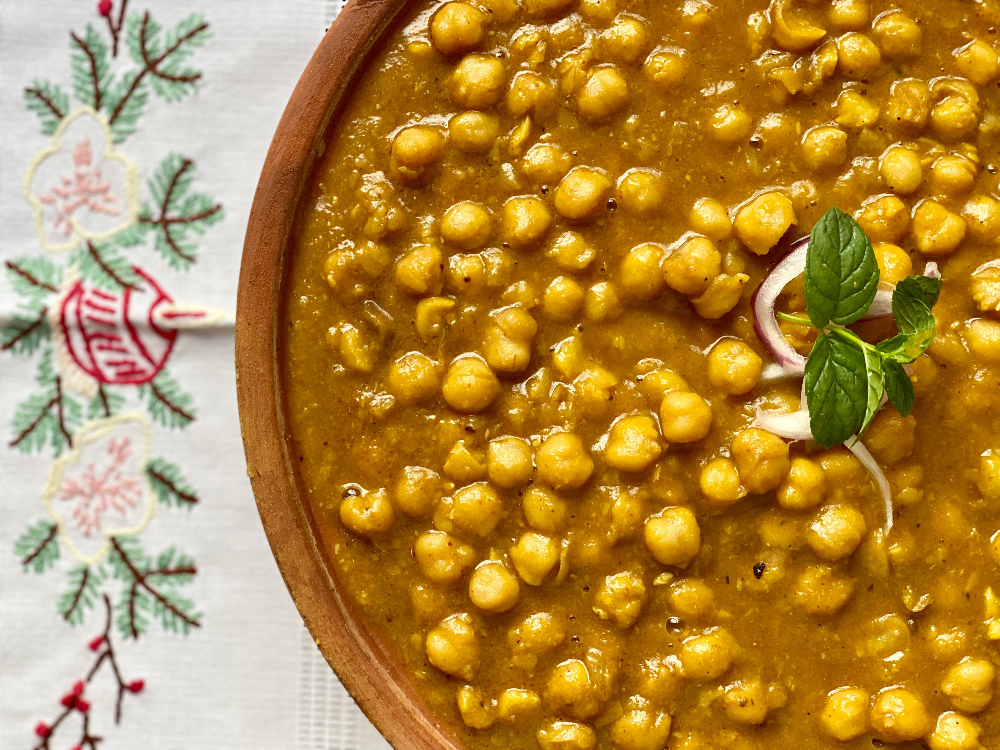

Prep time: 15mins | Cook time: 15mins | Total Time: 30mins
Total Servings: 2
Chickpea, or chana as called in Indian subcontinent, has been in trade over the centuries around the world.
Being a rich source of carbs and proteins for vegetarians, chickpeas with simple masalas to fray creates a variety of
culinary marvel, like chana masala, chhole bhature or even salad, to name a few.